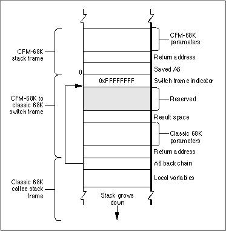

Legacy Document
Important: The information in this document is obsolete and should not be used for new development.
Important: The information in this document is obsolete and should not be used for new development.


Calling Classic 68K Code From CFM-68K Code
Calling classic 68K code from CFM-68K code is analogous to calling classic 68K code from PowerPC code. The call toCallUniversalProcinvokes the Mixed Mode Manager, which verifies that a mode switch is necessary. The Mixed Mode Manager sets up a CFM-68K to classic 68K switch frame before calling the classic 68K code. Figure 6-6 shows the structure of the switch frame.Figure 6-6 A CFM-68K to classic 68K switch frame

After returning from the call, the return value is copied to register D0, and the switch frame is popped off the stack. Control then passes back to the CFM-68K code.